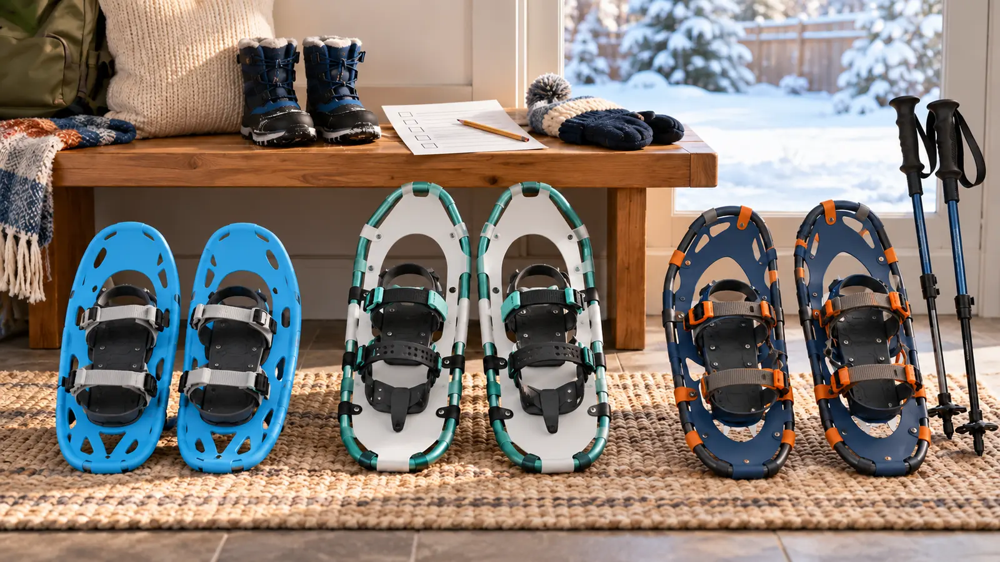

Rental or program pair
Best first move. Low commitment and often matched to the route. Inspect condition, ask staff to fit the boot, and request another pair when straps slip or hardware hurts.
WINTER GEAR · RENT-FIRST · AUTHORITY-EXPANSION
The right snowshoe is not the one with the biggest growth range. It is the one whose binding holds today’s waterproof boot, whose load range includes the dressed child, and whose trail is safe today.

Rent or borrow from a reputable program before buying. A first short session answers the expensive questions: Can the child walk with a wider stride? Does the binding hold the actual waterproof boot? Can an adult operate it with gloves? Does snow clump under the deck? Does the child still want to do this after fifteen minutes? A size chart cannot answer any of that.
Do not buy by age, shoe size or deck length alone. Makers use different load ranges, boot-size ranges, binding shapes and terrain categories. “Load” usually means the dressed user plus carried gear, but follow the exact manufacturer’s definition. Deep powder may need more flotation than packed trails, while a large deck can be awkward for a small stride. There is no honest universal size formula.
The binding is the first compatibility gate. It must match the boot volume and close securely without crushing the foot. Check buckles, straps, pivots and attachment points before every outing. Ice, packed snow and deep powder behave differently; a generic “aggressive traction” phrase does not prove the product fits a route. Never modify crampons or add traction parts that the manufacturer does not authorize.
Poles can help balance, but they create another sizing and supervision task. Follow the pole manufacturer, use baskets and wrist straps only as directed, and keep tips away from other people. A beginner can practice on flat open snow without poles if the program and snowshoe maker allow it. The kids’ trekking-pole guide covers the separate fit decision.
This is intentionally short. The National Park Service notes that snowshoeing may be far more tiring than the same distance on foot and that hidden moving water can create dangerous snow bridges. Do not use a gear test on frozen water, drainage crossings, steep terrain or avalanche terrain.
Use waterproof boots, weather layers, hat, gloves or mittens, eye protection, water, food, navigation, communication and a small adult-managed first-aid kit appropriate to the route. Cotton next to skin can stay wet; choose the family’s known winter layering system. Carry spare dry gloves and socks for a child. The layering guide, winter-boot fit guide and weather cutoff handle those separate decisions.
Check the current forecast, wind, daylight, road status and destination alert immediately before leaving. Falling temperature, strong wind, freezing rain, thunder, whiteout, ice, plow restrictions, hidden-water concerns or an official closure cancels the test. Do not promise a child that buying snowshoes guarantees snow.
Used snowshoes can be reasonable only when the exact model, manual and current compatibility are known. Reject cracked decks, bent frames, loose rivets, torn webbing, damaged traction, brittle or missing straps, uncontrolled pivots and mystery repairs. A qualified outdoor shop or the manufacturer should assess structural uncertainty. Do not use “looks fine” as a load test.
After use, follow the maker: remove snow and debris, dry at the approved temperature, inspect hardware and store away from UV, heat and children. Do not place plastic decks or bindings against a heater. Keep a small card with user setting, boot used and inspection date so the next adult does not guess.
The paid cards below are broad category searches, not tested picks. Compare exact maker load and boot ranges, binding instructions, deck dimensions, total weight, traction, repair parts, warranty and return terms. The cheapest pair is expensive when the binding does not fit. A youth label, high star rating or “all terrain” phrase is not evidence of compatibility.
Postpone when the child has not tried snowshoes, the route is unknown, the boot is changing, a mobility or medical issue changes gait or cold tolerance, the only available size requires rounding down a load range, or an adult cannot operate the binding with gloves. Rent through a supervised beginner program and ask a qualified outdoor professional when the route or equipment exceeds ordinary family recreation.
Reviewed October 26, 2026 using the National Park Service beginner snowshoeing and winter-hazard guidance, Ten Essentials, and current destination-rule principle that local alerts and marked routes control. Product fit remains manufacturer-specific. The matrix and thirty-minute test are original editorial tools, not product testing or instruction for backcountry travel. Paid links use the site’s approved Amazon Associate configuration. Report corrections through About.
MAKE THE WEEK COUNT
Build the plan your family can finish well, then leave enough energy for the next part of the day.
More family plansTHE USEFUL STUFF
These are practical categories to compare—not a reason to overpack. Check fit, specifications and current reviews before buying.
Paid links: As an Amazon Associate I earn from qualifying purchases. You pay no additional cost.
Compare the exact total-load range, boot range, binding sequence, deck dimensions, traction, replacement parts and current return terms.
See current options → COMPARE ON AMAZONMatch the dressed child plus carried load, waterproof boot, stride, trail surface and the manufacturer’s terrain and care instructions.
See current options → COMPARE ON AMAZONTreat growth range as secondary: the current setting must lock correctly, hold today’s boot and remain inside every maker-defined user limit.
See current options →